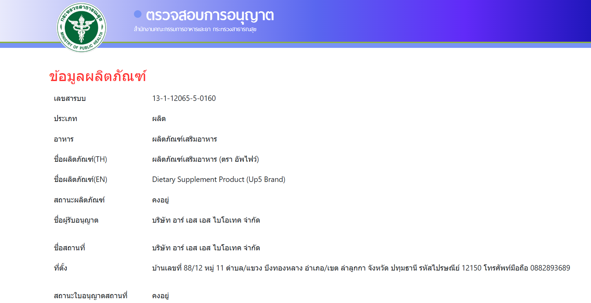

นมเสริมระบบย่อยอาหาร UP5 ไม่ใช่เพียงแค่ผลิตภัณฑ์เสริมอาหาร
แต่เป็นทางเลือกที่
ครอบคลุมในการดูแลสุขภาพระบบย่อยอาหาร โดยผ่านการวิจัยและพัฒนาอย่างเข้มงวดตาม
มาตรฐานสากล เราขอรับรองว่าจะส่งมอบผลิตภัณฑ์ที่มีคุณภาพสูง ปลอดภัย และเห็นผลจริง
เพื่อร่วมเป็นส่วนหนึ่งในเส้นทางฟื้นฟูระบบย่อยอาหารของผู้บริโภค
ผลิตภัณฑ์ UP5 ผลิตจากโรงงานที่ผ่านการรับรอง GMP – WHO
โดยใช้ระบบสายการ ผลิตอัตโนมัติ
ปิดสนิททุกขั้นตอน
เพื่อรักษาความสะอาดและปลอดภัยด้านอาหาร
กระบวนการทั้งหมดเป็นไปตามมาตรฐาน ISO 22000:2018
ได้รับการรับรองจาก FDA ประเทศไทย:
https://porta.fda.moph.go.th/FDA_SEARCH_ALL/PRODUCT/FRM_PRODUCT_FOOD.aspx?fdpdtno=1311206550160 UP5 พัฒนาสูตรพิเศษที่รวม "ส่วนประกอบทองคำ" เพื่อประสิทธิภาพสูงสุด:
หากลูกค้าใช้แล้วไม่เห็นผล รับประกันคืนเงิน 100%
ผลิตภัณฑ์เสริมอาหาร Up5 ได้
รับการจดทะเบียนอย่างถูกต้อง
ตามกฎหมาย และสามารถวาง
จำหน่ายได้ในประเทศไทย
ยืนยันว่าโรงงานผลิตมี
ระบบการผลิตที่ปลอดภัย
ตามหลักสุขลักษณะที่ดี
(GHPs) และมีการควบคุม
จุดวิกฤต (HACCP)
ใบรับรองสถานที่ผลิต
ผลิตภัณฑ์เสริมอาหาร ชา
กาแฟ ฯลฯ ได้รับการรับรอง
อย่างถูกต้องตามกฎหมาย